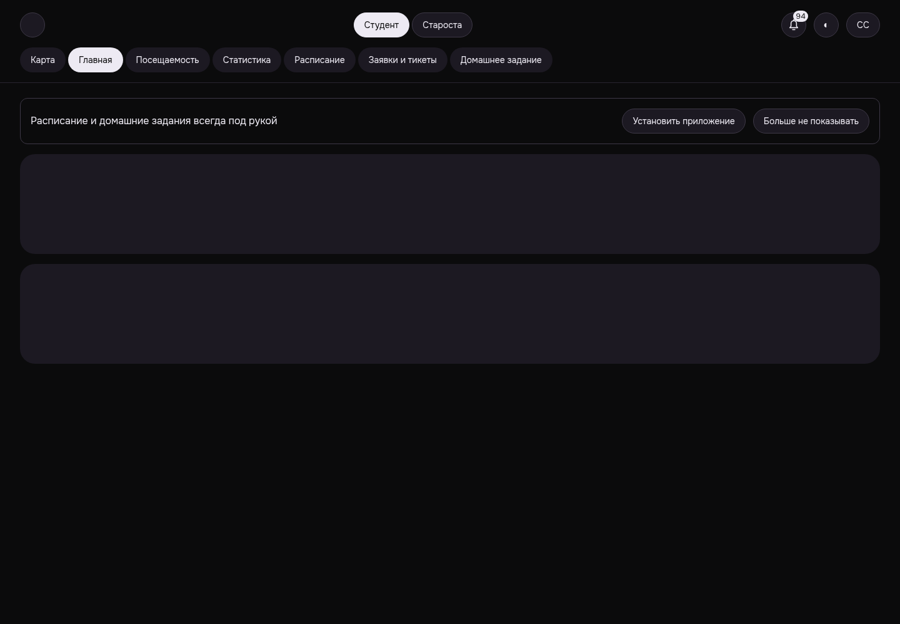

Тёмная тема сохранена после обычного повторного входа
Native dark CAS1 → logout204/oldBearer401 → второй normal login → fresh request-bound GET dark/revision1, same device cookie, no PUT after relogin. Home still initial skeleton; theme observation only.
WEB-THEME__WT-04-suffix-same-new-device-dark-after-login__dark__1440__7d664ce89
revision 7d664ce89cff5813772d1923e310ad74c2706c87
SHA256 8803e178c62380cd7efddc56a9ca279fef689bff3d592b8764824de27c9cf6be
